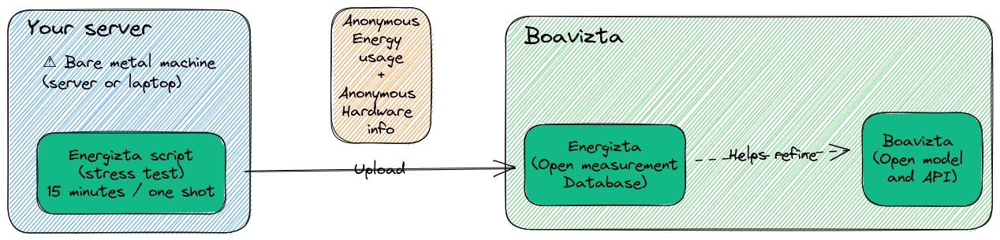

Energizta
Energizta is a collaborative project to collect and report open-data on the energy consumption of servers.
Warning: this is still a very early stage project. Any feedback or contribution will be highly appreciated.

What
Science is still at an early stage for computer energy consumption evaluation.
Several approaches have been used to measure (or model) the power consumption of computers:
-
RAPL can be used on all recent Intel and AMD CPUs. Most energy consumption metrology agents use it to estimate CPU+RAM consumption which represents the majority of power consumption on most common servers (CPU, RAM, SSD or disk… no GPU). Its it not always possible to access RAPL data. It needs recent Linux kernel, recent hardware, and root access. And it needs a monitoring agent to log data frequently, because you cannot ask RAPL once a year what the consumption has been in the last year. Besides, in environment such as public cloud or VM you can not access RAPL interfaces.
-
The IPMI (DCMI) can provide the power consumption of the power supply unit, but we don't know for sure how this metric is calculated. And access to DCMI seems to be very rare on public bare-metal hosters, so it is a metric we cannot get on every dedicated server.
-
lm-sensorscan provide the ACPI power, but again it seems to be very rare, and we don't know how this metric is calculated, more search is needed. -
A PDU could provide the data, but most users do not have access to datacenters PDU.
-
Wattmeters between the server and its power plug could provide the data, but obviously we don't have that on public baremetal servers.
-
Model have been developed to retrieve consumption data from proxy metrics. They often use data from spec_power or from unormalized data collection process. Unfortunately, the level of granularity is often not fine enough to infer quality models.
These different methods give different result on the same environment. For instance, the first tests to compare RAPL measurements (CPU+RAM) to total power consumption (with DCMI or watt meter) seems to indicate that the global power can be between 1 and 10x what we get with RAPL (again, on standard dedicated server without GPU).
So how do we bridge these gaps? Can we guess the total power based on RAPL only? Maybe add some fixed costs for hardware? Maybe we should add storage IOs? Network? Maybe temperature can help? How much precision can we get with partial information? How precisely can we estimate server yearly power consumption with only hardware specs and proxy metrics?
Energizta is trying to address these problems and provide a set of tools to report and model the power consumption of servers with as much precision as possible.
How?
- With a script that collect hardware configurations and retreive power consumption metrics on baremetal servers at differents states with differents methods.
- With a "citizen science" database where anyone can contribute by uploading the information returned by the script. This database will be opendata and should allow research scientists to work on models and equations to describe power usage based upon hardware specs proxy metrics (realtime or average).
- With an API that will compile the result of the models and equations to provide power consumption estimation based upon what's available to the user given it's context.